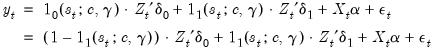
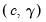

|
|
|

and the selection of a transition function
. For a given
and
, we may estimate the regression parameters and the threshold values and slope  via nonlinear least squares. Additionally, given a list of candidate variables for
, we can select a threshold variable using model selection techniques.

 , where
, where  represents one or more thresholds and
represents one or more thresholds and  is a threshold slope parameter. Note that we have divided the regressors into two groups—
is a threshold slope parameter. Note that we have divided the regressors into two groups—  variables whose coefficients vary across the
variables whose coefficients vary across the  regimes, and
regimes, and  variables with coefficients that are regime invariant.
variables with coefficients that are regime invariant. , we may rewrite the discrete TR equation as:
, we may rewrite the discrete TR equation as: that returns values between 0 to 1. Then we have
that returns values between 0 to 1. Then we have has different properties as
has different properties as  ,
,  , and
, and  , depending on the specific functional form.
, depending on the specific functional form.  so that the two regimes correspond to high and low values of the threshold variable. The threshold value
so that the two regimes correspond to high and low values of the threshold variable. The threshold value  determines the point at which the regimes are equally weighted, while
determines the point at which the regimes are equally weighted, while  controls the speed and smoothness of the transition. As
controls the speed and smoothness of the transition. As  , the transition function approaches the indicator function and the model approaches the discrete threshold model.
, the transition function approaches the indicator function and the model approaches the discrete threshold model. from the threshold
from the threshold  . Furthermore, when , and
. Furthermore, when , and  approaches 1 as and . The ESTR model does not nest the discrete TR model since, as or
approaches 1 as and . The ESTR model does not nest the discrete TR model since, as or  , the specification becomes linear since
, the specification becomes linear since  approaches a constant function returning 0 or 1.
approaches a constant function returning 0 or 1. approaches 1 for and , and
approaches 1 for and , and  approaches 0 for
approaches 0 for  in-between. Thus, the L2STR model nests a three-regime discrete TR model where the outer regimes have a common linear specification.
in-between. Thus, the L2STR model nests a three-regime discrete TR model where the outer regimes have a common linear specification. ,
,  attains its minimum value at with a non-zero value.
attains its minimum value at with a non-zero value. , see van Dijk, Teräsvirta, and Franses (2002) who offer extensive commentary on the properties of these transition functions and provide concrete examples of their use in empirical settings.
, see van Dijk, Teräsvirta, and Franses (2002) who offer extensive commentary on the properties of these transition functions and provide concrete examples of their use in empirical settings. is an estimate of the information,
is an estimate of the information,  is the variance of the residual weighted gradients, and
is the variance of the residual weighted gradients, and  is a scale parameter.
is a scale parameter. is an estimator of the residual variance (with or without degree-of-freedom correction).
is an estimator of the residual variance (with or without degree-of-freedom correction).  using the outer-product of the gradients (OPG) of the error function or the one-half of the Hessian matrix of second derivatives of the sum-of-squares function:
using the outer-product of the gradients (OPG) of the error function or the one-half of the Hessian matrix of second derivatives of the sum-of-squares function: and
and  , and employ a White or HAC sandwich estimator for the coefficient covariance as in
, and employ a White or HAC sandwich estimator for the coefficient covariance as in